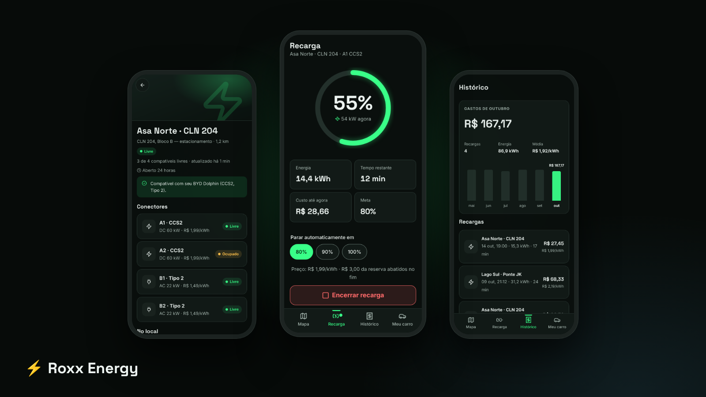
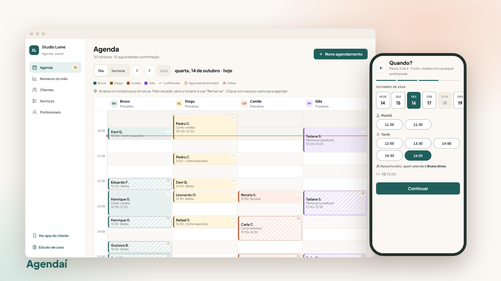
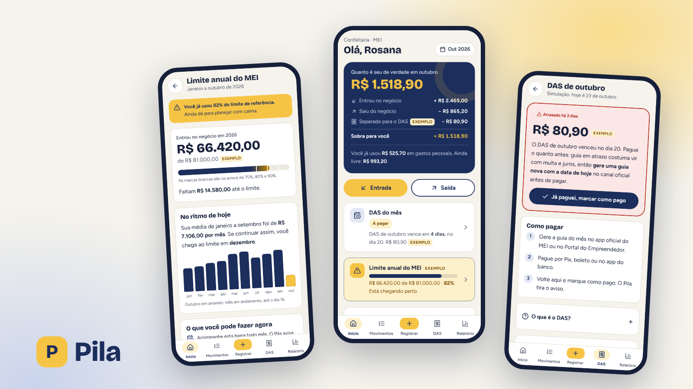
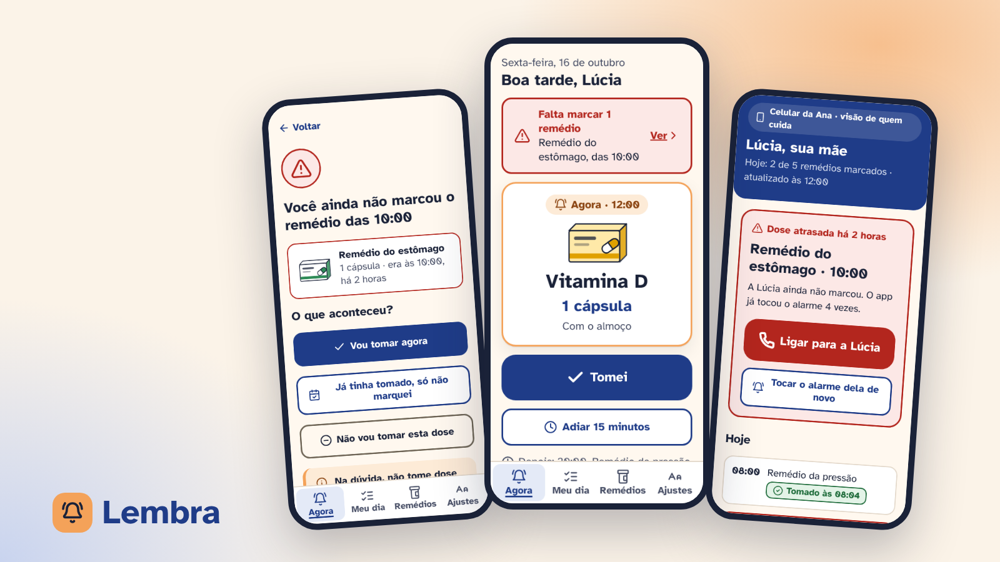
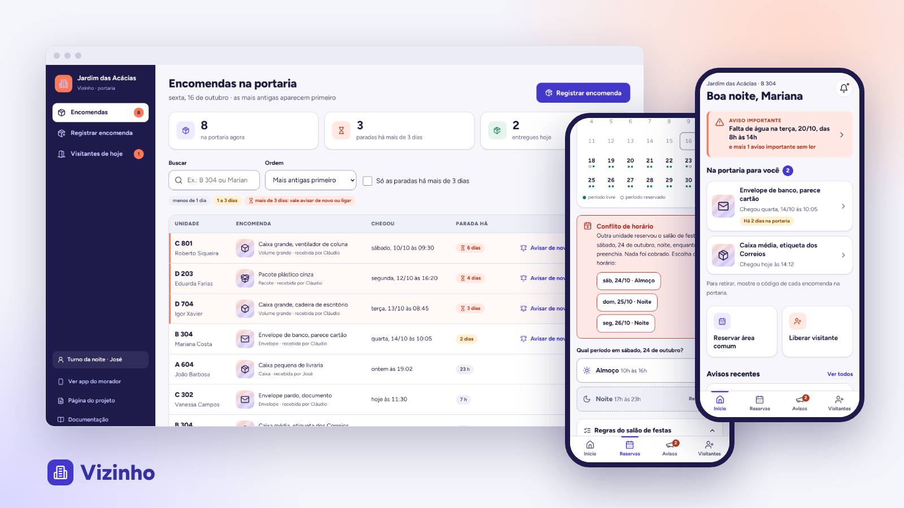

Projetos
Estudos de caso completos, da pesquisa ao protótipo. Busque por nome, tema ou tipo de produto.
5 projetos
-

App mobile · Mobilidade elétricaRoxx Energy
App para quem tem carro elétrico achar um carregador livre, funcionando e compatível, reservar a vaga e pagar a recarga no mesmo lugar.
-

App mobile + painel web · ServiçosAgendaí
Agendamento para salão, barbearia e estética: o cliente marca sozinho, sem criar conta, e o dono organiza a agenda e acompanha o mês.
-

App mobile · FinançasPila
App de finanças para MEI e autônomos que separa o dinheiro do negócio do pessoal, mostra quanto sobrou no mês e lembra do DAS.
-

App mobile · SaúdeLembra
App para pessoas idosas tomarem os remédios na hora certa, com letra grande e botões enormes, e um familiar acompanhando as doses de longe.
-

App mobile + painel web · MoradiaVizinho
App do morador e painel da portaria para condomínios: aviso de encomenda com código de retirada, reserva do salão sem conflito e avisos importantes em destaque.
Nenhum projeto com esse filtro.
Os projetos no meu GitHub
Tudo o que está aqui também está no meu GitHub: pesquisa, fluxos, wireframes, protótipos e o histórico de cada decisão.
- Meu GitHubPerfil com todos os repositórios
- Repositório do portfólioTodos os projetos desta página, com arquivos e histórico
- Roxx Energy no GitHubEstudo de caso, protótipo, design system e documentação
- Agendaí no GitHubEstudo de caso, protótipo, design system e documentação
- Pila no GitHubProtótipo, documentação do processo e prints
- Lembra no GitHubProtótipo, documentação do processo e prints
- Vizinho no GitHubProtótipo, documentação do processo e prints